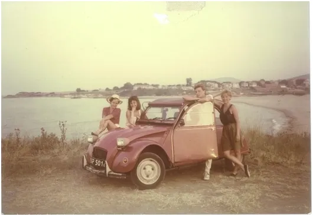
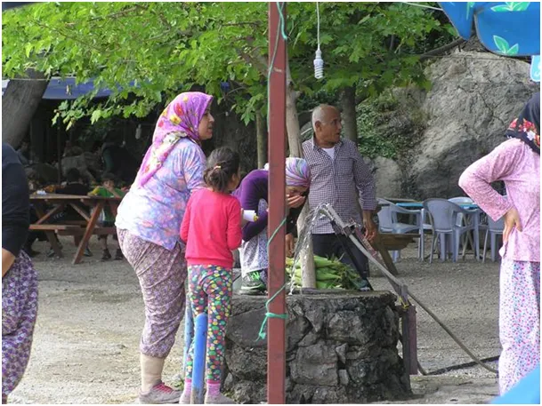
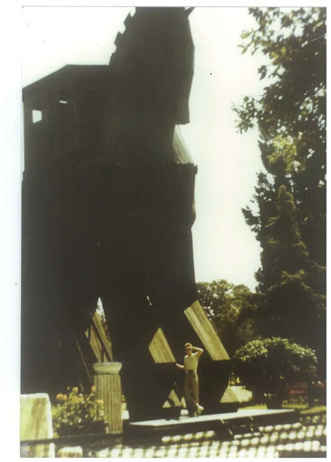

Turystyka jako świat równoległy.
Swą edukację literacką zaczynałem od "Bajek Robotów" Stanisława Lema a skończyłem na Matrixie. O ile z Lema pamiętam lepiej nastrój czystej logiki, niż fakty to po wyjściu z kina po Matrixie szybko okazało się, że film leci dalej wokół nas do dziś. Premiera filmu to był rok 1999, w którym wszyscy żyliśmy wizją końca świata z powodu "pluskwy milenijnej". Wiem, że nie wszyscy mogą pamiętać o co chodziło, wyjaśniam: Media dzień i noc nadawały, że z powodu zaniedbania nie przewidziano konsekwencji pojawienia się daty 01.01.2000 i wszystkie komputery trafi jasny grom wszytko się zatrzyma, w tym atomowe elektrownie a samoloty będą spadać z nieba jak ustrzelone kaczki. Lud posłusznie kupował nowy sprzęt, wymieniał systemy operacyjne na "lepsze" a ktoś w Kalifornii liczył stosy bezsensownie wydanych miliardów. Z komputerami byłem zawsze "za pan brat", do dziś korzystam DOSa, gdy trzeba, i krytycznie przyglądałem się temu obłędowi. Sukces polegał na tym, że akcja miała swych kapłanów. Szefowie IT potakiwali całej hucpie i kupowali sobie nowe zabawki na koszt firmy. Prawda, że coś to nam przypomina z ostatnich dwóch lat ? Autorytety w krytycznej chwili zawodzą.

Ale miało być o turystyce... Mile wspominam lata, gdy w 4 osoby przez 3 dni jechaliśmy na wakacje do Bułgarii fiatem 126p. Na studiach zamieniłem rodzinę na przyjaciół a Fiata 126p na Citroena 2CV. Picie wody z potoku i gotowanie zupy w lesie w towarzystwie rumuńskich Cyganów to było tak normalne jak dziś parówka na Orlenie, ale o wiele zdrowsze. Jechaliśmy bez planu, przed siebie, noclegi wyznaczało zmęczenie, albo pęknięta opona. Taka awaria to był sens podróży, cała wieś przyglądała się, w końcu traktorzysta rozpalał ogień i wulkanizowaliśmy dętkę na rozgrzanym kamieniu. Życie w pełni, gdy na migi rozumiesz się doskonale z człowiekiem z innego świata.
Dziś wakacje to dość przewidywalny scenariusz. Znam go z relacji przyjaciół i obserwacji, gdy zabieram się "na łepka" autobusem touroperatora z azjatyckiego lotniska. Jedziemy 1-2 h, autobus rozwozi turystów od hotelu do hotelu. Po drodze zawija do restauracji, gdzie wszyscy są zachwyceni, że płacą za coś tam 1 euro, gdy dla miejscowych kosztuje to 1 zł. 40 osób wydaje kilkaset euro, kierowca dostaje swoją dolę i wszyscy są zadowoleni.

W tym samym kraju ludzie są zazwyczaj uczciwi, ale tylko do granic naiwności klientów. Nie jest grzechem sprzedać kilogram brzoskwiń za 10 zł, jeśli ktoś płaci tyle. Słowo "fiyat" to cena i zgoda zarazem. Turystyka zmienia lokalne populacje do cna. Lokalna ludność nie ma czasu na tradycyjną gościnność. Hierarchia personelu w turystycznych zagłębiach to de facto gangi. Dostawcy do hoteli walczą o dostęp do paśnika, oferują coraz gorszy towar za coraz niższą cenę. Na końcu wszystko ratuje kucharz sypiąc przypraw ponad miarę, aby "smakowało".

Nie chodzi o naiwny sentymentalizm, że kiedyś to było fajnie, bo do dziś podróżuję po Azji bez biura i często bez planu. Gdy samolot przewozi nas kilka tysięcy kilometrów żal trochę nie dotknąć tamtego świata, nawet przez szybę. Lądujmy w jednym z programów Matrixie pod tytułem "wakacje ver 3.0 adult" i za 14 słyszymy "Game Over" i wypadamy "mocno zmęczeni" obok naszej walizki na taśmociągu w hali przylotów.
Podróż i turystyka to dwie różne rzeczy i warto posmakować obu, ale smak podróży zadziwia nas świeżością zawsze bez względu na to, czy jesteśmy gdzieś po raz pierwszy, czy kolejny.
Paweł Klimczewski